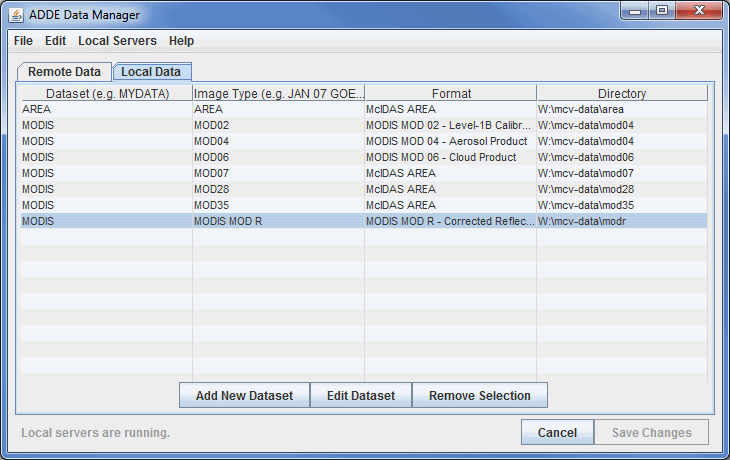
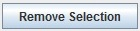
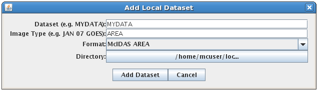
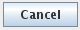
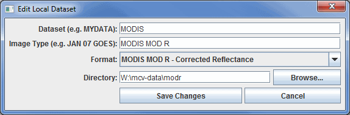

The Local and Remote ADDE Data Managers are accessible in the Main Display window through the Tools->Manage ADDE Datasets menu item. Select the Local Data tab to manage access to image data on your workstation, or the Remote Data tab to manage access to data on other workstations. Continue below for more information about the Local ADDE Data Manager, or go to the Remote ADDE Data Manager page for more information.
Viewing the Existing Local Datasets

Image 1: Local ADDE Data Manager
The Local ADDE Data Manager lets
you add, delete or edit local image datasets that are available through the Satellite->Imagery chooser when you select <LOCAL-DATA> in the Server field. Other types of data (e.g., grib or point) in local files can be accessed directly through other choosers (e.g., the General->Files/Directories chooser).
The columns in the table and buttons are defined below.
- Dataset - Sets the dataset name for the local server entry. The dataset name is limited to eight characters or less.
- Image Type - Sets the image type name for the new local server entry. This will appear under the Image Type pull down menu in the Satellite Imagery chooser.
- Format - Sets the format of the image files. The following formats are supported in McIDAS-V:
- AMSR-E L 1b
- AMSR-E L 2a
- AMSR-E Rain Product
- GINI
- LRIT GOES-9
- LRIT GOES-10
- LRIT GOES-11
- LRIT GOES-12
- LRIT MET-5
- LRIT MET-7
- LRIT MTSAT-1R
- McIDAS AREA
- Meteosat OpenMTP
- Note: There is a very specific file name convention that must be used for this server. This file name format differs from that of data ordered from EUMETSAT. For example, Meteosat-7 OpenMTP data ordered from EUMETSAT has these file name conventions for IR, VIS, and WV bands:
IR - OpenMTP_2015-01-15_25_712345_1_1_1.IR
VIS - OpenMTP_2015-01-15_25_712345_1_1_1.VISSN
WV - OpenMTP_2015-01-15_25_712345_1_1_1.WV
These file names must be changed to:
IR - aixxx_m07_d20150115_s120000_n40_cness.omf
VIS - avxxx_m07_d20150115_s120000_n40_cness.omf
WV - awxxx_m07_d20150115_s120000_n40_cness.omf
Note that the time information in the modified file names (s120000 for 12 UTC) is not included in the original file names.
- Metop AVHRR L 1b
- Note: This server works with data ordered from NOAA CLASS. This data must not be geographically subsetted. The data can be ordered in 10-bit files or 16-bit files (as long as all channels are included).
- MODIS L1b MOD02 (MODIS Level 1b)
- MODIS L2 MOD04 (MODIS Level 2 Aerosol)
- MODIS L2 MOD06 (MODIS Level 2 Cloud Top Properties)
- MODIS L2 MOD07 (MODIS Level 2 Atmospheric Profile)
- MODIS L2 MOD28 (MODIS Level 2 Sea Surface Temperature)
- Note: When loading this data, you must use line/element for the Location, and use the raw size of the image, or a magnification with the lock icon unlocked)
- MODIS L2 MOD35 (MODIS Level 2 Cloud Mask)
- MODIS L3 MODR (MODIS Level 2 Corrected Reflectance)
- MSG HRIT FD and HRV
- Note: McIDAS-V reads segmented MSG Level 1.5 files transmitted by EUMETSAT. The prologue files (*PRO*) must be in the same directory as the segmented data files or the images will not display. Note: To order segmented MSG files from EUMETSAT's Earth Observation (EO) Portal, select 'HRIT data sets in tar file' in the Format Type section of the Shopping Trolley tab.
- MTSAT HRIT
- NOAA AVHRR L 1b
- Note: This server works with data ordered from NOAA CLASS. This data must not be geographically subsetted. The data can be ordered in 10-bit files or 16-bit files (as long as all channels are included).
- SSMI (TeraScan netCDF)
- TRMM (TeraScan netCDF)
- GOES ABI
- Note: This server is available on Linux and OS X platforms.
- The files must be mission-standard Level 1b files in netCDF-4 format (like those from NOAA CLASS or decoded from the GRB data stream using CSPP Geo) or mission-standard Level 2+ products in netCDF-4 format (like those from NOAA CLASS). The names of files should look similar to ABI-L1b-RadC-M3C01_G16_s2015229195720.nc (current CSPP Geo naming convention) or OR_ABI-L1b-RadC-M4C16_G16_s20151702215532_e20151702220362_c20151702220394.nc (GOES-R Ground System naming convention).
- Himawari 8
- Note: This server is available on Linux and OS X platforms.
- The file names must match the JMA HSD (Himawari Standard Data) image file naming convention, HS_aaa_yyyymmdd_hhnn_Bbb_cccc_Rjj_Skkll.DAT, described in the Himawari Standard Data User's Guide.
- INSAT-3D Imager
- Note: This server is available on Linux and OS X platforms.
- INSAT-3D Sounder
- Note: This server is available on Linux and OS X platforms.
- Directory - Represents the location of the local files using the pop up navigation box. At this time, only a directory can be selected. An option to add files by file mask will be added in the future.
- - Opens the Add Local Dataset window, allowing you to create a new local dataset.
- - Opens the Edit Local Dataset window, allowing you to edit the dataset that is currently selected in the Local Data tab.
-  - Removes the currently selected local dataset.
- - Closes the ADDE Data Manager window and saves any changes.
The rows in this window are listed in the alphabetical order of the datasets by default, and this order can be reversed by clicking on the name of the column ('Dataset'). Each column can be sorted alphabetically by clicking on the name of the column. At the bottom of this window, there is a status message that lets you know if local servers are running. The Server Manager will attempt to connect to ports 8112 to 8122. When port 8112 cannot be connected to, port 8113 will be attempted, and then 8114 and so on. After these ports have been stopped or cannot be connected to, the status message will say "Local servers have been stopped". When this status message is showing, you cannot connect to any local servers. To help avoid connection problems, your firewall software must allow connections to port 8112.
Adding a New Local Dataset
To add a new local dataset entry, select File->New Local Dataset from the ADDE Data Manager menu, or click .

Image 2: Add Local Dataset Window
The Add Local Dataset window lets you add access to local image datasets so they are available through the Satellite->Imagery chooser. The fields and buttons are defined below.
- Dataset - Represents the dataset name for the local server entry. The dataset name is limited to eight characters or less.
- Image Type - Represents the image type name for the new local server entry. This will appear under the Image Type pull down menu in the Satellite->Imagery chooser. The image type name is limited to twelve characters or less.
- Format - Represents format of the image files. See the above list for data formats that are supported as local datasets in McIDAS-V.
- Directory - Represents the location of your files.
- - Adds the new entry to the Local ADDE Data Manager containing the information specified in this window.
-  - Closes the window and discards any information that was entered.
Editing an Existing Local Dataset
To edit an existing entry, double click on the entry, select Edit->Edit Entry..., or click to bring up the Edit Local Dataset window. Make the needed changes and click (or click to discard any changes and close the window).

Image 3:Edit Local Dataset Window
Menus
Many of the menu items seen utilizing this display are standard options that can be found in the Menus section of the Layer Controls page. However, there
are several menu options that are unique to this tool.
The File menu has these unique options:
- New Remote Dataset - Opens a Define New Remote Dataset window that prompts for information about the dataset.
- New Local Dataset - Opens an Add Local Dataset window that prompts for information about the dataset.
- Import MCTABLE... - Opens an Open window that allows you to import MCTABLE ADDE entries into the ADDE Data Manager.
- Import from URL... - Opens an Import from URL window that allows you to specify a URL for a MCTABLE along with accounting information.
- Close - Closes the ADDE Data Manager window.
The Edit menu has these unique options:
- Edit Entry... - Opens the Edit Local Dataset window, where you can edit the information about your local dataset. This window is the same as the Add Local Dataset window.
- Remove Selection - Removes the selected dataset from the list of local datasets.
The Local Servers menu has these unique options:
- Start Local Servers - Starts a new local server if your current one has stopped working.
- Stop Local Servers - Stops the currently running local server.